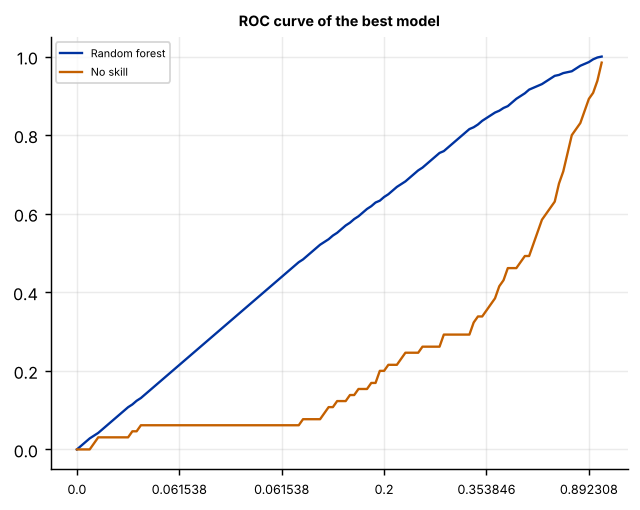

Run this model on your own data in Open Econometric Systems →
Step 1The question and the measures
How well can we predict a yes/no outcome, and is the predicted probability trustworthy? A classifier maps predictors \(x\) to a probability \(\hat p(x) = P(y=1\mid x)\). Three properties matter:
- Discrimination: does a randomly chosen positive get a higher score than a randomly chosen negative? The area under the ROC curve (AUC) is that probability; 0.5 is chance and 1 is perfect.
- Calibration: among units with predicted probability 0.9, do about 90% have \(y=1\)? A model can rank well and still be miscalibrated.
- Cut-off performance: accuracy, sensitivity and specificity depend on a threshold that should come from the costs of the two errors, and on the class balance.
The Brier score \(\frac1n\sum(\hat p_i-y_i)^2\) and the log loss combine discrimination and calibration.
Three checks before you report a classifier
- What is the share of the common class? Accuracy of a model that always predicts the common class is the benchmark, not 50%.
- Is the test sample untouched? Tuning on the test set overstates every number.
- Would a predictor be inappropriate to use? A model that predicts well using a protected characteristic is a different finding from one that does not.
How to write it: the model
We predict whether a mortgage application in Boston was approved, using 15 characteristics of the applicant and the loan: race, marital status, sex, dependants, years of schooling, the housing expense and total obligation ratios, the loan-to-price ratio, the unemployment rate in the industry, a co-signer, a consumer credit history score, public records, two mortgage-lateness indicators and a verification flag. We estimate a logit, an L1-penalised logit with the penalty chosen by five-fold cross-validation, a random forest and gradient boosting on 75% of the sample, and evaluate them on the remaining 25% by AUC, accuracy, Brier score, log loss and calibration (Hastie, Tibshirani and Friedman 2009).
Step 2Load the data and set the benchmark
import numpy as np
import pandas as pd
import oes_engine as oes # pip install -e open-econometric-systems/oes-engine
data = open("loanapp.csv").read()
df = pd.read_csv("loanapp.csv")
xs = [c for c in df.columns if c != "approve"]
print(len(df), "applications;", xs)
print("share approved:", round(df.approve.mean(), 4))
print(df.groupby("white").approve.agg(["mean", "size"]).round(3))1971 applications; ['white', 'married', 'male', 'dep', 'sch', 'hrat', 'obrat', 'loanprc', 'unem', 'cosign', 'chist', 'pubrec', 'mortlat1', 'mortlat2', 'vr']
share approved: 0.8762
mean size
white
0 0.703 303
1 0.908 1668How to read it
Of the 1,971 applications, 87.6% were approved, so a rule that approves everything is right 87.6% of the time and any accuracy below that is worse than no model. The raw approval rate is 90.8% for white applicants and 70.3% for the others (303 applications), and that difference is part of why the sensitive predictor needs a separate check below. With 12.4% rejections, the question is whether the predictors can find them: accuracy will move little and AUC is the better yardstick.
Step 3Fit the four classifiers
spec = dict(y="approve", x=xs, test_share=0.25)
r = oes.run("classify", data, spec)
oes.summary(r)
oes.show(r, "Out-of-sample")Observations: 1971
Predictors: 15
Share of ones: 0.8762
Best model by AUC: Random forest
Best AUC: 0.8081
Youden cut-off: 0.871
Out-of-sample classification accuracy
AUC Accuracy (cut-off 0.5) Brier score Log loss
Model
Logit 0.7613 0.8742 0.0993 0.3384
L1 logit (LASSO) 0.7613 0.8742 0.0991 0.3365
Random forest 0.8081 0.8763 0.0958 0.3201
Gradient boosting 0.7692 0.8661 0.1036 0.3492
Note: Test set: a random 25% of the observations (493). Always predicting the more common class gives accuracy 0.8682 and AUC 0.5.How to read it
On the 493 test applications the random forest has the highest AUC (0.808), against 0.761 for the logit and the L1 logit and 0.769 for boosting. Its Brier score (0.096) and log loss (0.320) are also the lowest, so the ranking by AUC is confirmed by the probability measures. Accuracy at the 0.5 cut-off is nearly the same for all four (0.866 to 0.876), within 0.01 of the 0.868 benchmark of approving everyone in the test sample: accuracy hides the differences that AUC reveals, because most applicants are approved. The penalised logit is no better than the plain logit, as expected with 15 predictors and 1,500 training cases.
Step 4Cut-offs, errors and calibration
oes.show(r, "Confusion")
oes.show(r, "Calibration")
oes.plot(r, "ROC curve", ncols=1, size=(5, 4))Confusion matrix of the best model (Random forest) at two cut-offs
True positives False positives False negatives True negatives Sensitivity Specificity
Cut-off
0.500 427 60 1 5 0.9977 0.0769
0.871 350 19 78 46 0.8178 0.7077
Note: The second row uses the cut-off that maximises sensitivity plus specificity (Youden's J) on the test set; choose the cut-off from the costs of the two kinds of error instead if you can.
Calibration of Random forest: predicted against observed share, by quintile of predicted probability
Observations Mean predicted Observed share
Predicted probability
0.320 to 0.844 99 0.7171 0.6061
0.844 to 0.909 98 0.8835 0.8776
0.909 to 0.940 99 0.9254 0.8990
0.940 to 0.964 98 0.9531 1.0000
0.964 to 0.996 99 0.9768 0.9596
Note: A calibrated model has the two columns close. Discrimination (AUC) and calibration are different properties.
How to read it
At the default cut-off of 0.5 the forest approves almost everything: it catches 99.8% of the approvals (sensitivity) but only 7.7% of the rejections (specificity). Moving the cut-off to 0.871, the value that maximises sensitivity plus specificity, gives 81.8% and 70.8%: 46 of the 65 rejections are now found, at the price of refusing 78 of the 428 applications that were approved. The cut-off is a policy decision, and which error costs more (lending to a bad risk or refusing a good one) should set it. Calibration by quintile of predicted probability is good in the upper four quintiles (predicted 0.88, 0.93, 0.95 and 0.98 against observed 0.88, 0.90, 1.00 and 0.96) and over-optimistic in the lowest, where the model predicts 72% approved and 61% were.
Step 5Should a sensitive predictor be in the model?
rows = []
for name, cols in {"all predictors": xs, "without race": [c for c in xs if c != "white"], "credit variables only": ["hrat", "obrat", "loanprc", "chist", "pubrec", "mortlat1", "mortlat2", "vr"]}.items():
rr = oes.run("classify", data, dict(y="approve", x=cols, test_share=0.25))
t = {x[0]: x for x in rr["tables"][0]["rows"]}
rows.append([name] + [float(t[m][1]) for m in ("Logit", "Random forest", "Gradient boosting")])
print(pd.DataFrame(rows, columns=["predictors", "AUC logit", "AUC forest", "AUC boosting"]).round(4))predictors AUC logit AUC forest AUC boosting 0 all predictors 0.7613 0.8081 0.7692 1 without race 0.7349 0.7952 0.7502 2 credit variables only 0.7495 0.7544 0.7599
How to read it
Dropping race lowers the AUC by 0.013 for the forest (0.808 to 0.795) and by 0.026 for the logit (0.761 to 0.735), so race adds some predictive content but most of it is in the other variables, and a model without race can be used where race must not enter the decision. Using only the eight credit variables the forest falls to 0.754 and the three models are within 0.01 of each other. Removing race does not make the model neutral: the remaining variables can proxy for race, and the approval gap by race in the data should be examined with a causal design (for example, a regression of approval on race with controls) before a classifier trained on these decisions is used to make new ones. A classifier trained on past decisions learns the practices that produced them.
Step 6Robustness to the split
auc = {}
for share in (0.2, 0.25, 0.33, 0.4):
rr = oes.run("classify", data, dict(y="approve", x=xs, test_share=share))
for x in rr["tables"][0]["rows"]:
auc.setdefault(x[0], []).append(float(x[1]))
print(pd.DataFrame(auc, index=["20%", "25%", "33%", "40%"]).round(3))Logit L1 logit (LASSO) Random forest Gradient boosting 20% 0.750 0.748 0.810 0.775 25% 0.761 0.761 0.808 0.769 33% 0.750 0.756 0.809 0.779 40% 0.750 0.752 0.800 0.771
How to read it
The forest is best at every test share (AUC 0.800 to 0.810), ahead of boosting (0.769 to 0.779) and the logit (0.750 to 0.761), and each AUC moves by about 0.01 with the split, which gives the size of the noise in a single hold-out comparison. Differences of 0.01 between models would not be reliable on one split; the gap of about 0.05 between the forest and the logit is.
Step 7Write the results
How to write it: results
Approvals are 87.6% of applications, so a rule that approves all of them has accuracy of about 0.88. On a 25% hold-out sample the random forest discriminates best (AUC 0.808; Brier 0.096), ahead of boosting (0.769) and the logit and L1 logit (0.761). All four are within 0.01 of the benchmark accuracy (0.868 in the test sample) at a cut-off of 0.5, where the forest approves almost every applicant (sensitivity 0.998, specificity 0.077); at the Youden cut-off of 0.871 they are 0.818 and 0.708. Predicted probabilities are well calibrated except in the lowest quintile, where they are too high. Excluding race lowers the AUC by 0.01 to 0.03, and the ranking of the models is stable across test shares of 20% to 40%. The model describes past approval decisions and should not be used to make new ones without an assessment of the practices that generated them.
| Report | What | Where |
|---|---|---|
| Measures | AUC, calibration, cut-off | Step 1 |
| Benchmark | Class balance, majority rule | Step 2 |
| Models | Four classifiers, hold-out accuracy | Step 3 |
| Cut-off | Confusion matrix, calibration, ROC | Step 4 |
| Sensitive predictor | AUC without race | Step 5 |
| Robustness | Test share | Step 6 |
References. Munnell, A., Tootell, G., Browne, L. and McEneaney, J. (1996), "Mortgage Lending in Boston: Interpreting HMDA Data," American Economic Review 86. Hastie, T., Tibshirani, R. and Friedman, J. (2009), The Elements of Statistical Learning, 2nd ed., Springer. Fawcett, T. (2006), "An Introduction to ROC Analysis," Pattern Recognition Letters 27. Niculescu-Mizil, A. and Caruana, R. (2005), "Predicting Good Probabilities with Supervised Learning," ICML. Brier, G. (1950), "Verification of Forecasts Expressed in Terms of Probability," Monthly Weather Review 78.